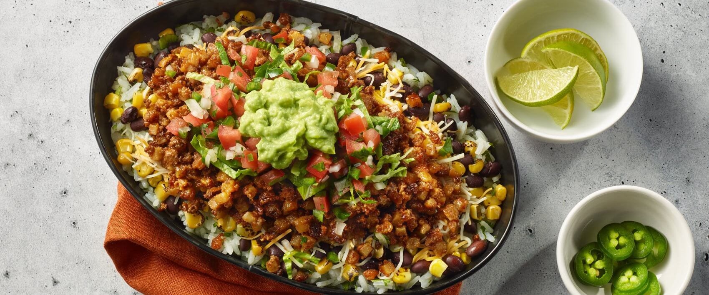

Skillet Burrito Bowl

Description
An easy skillet meal loaded with Tex-Mex flavor—rice, beans, meat, and veggies all cooked together for a fast, hearty bowl.
Ingredients
- 1 tablespoon vegetable oil
- 1 pound ground beef
- 1 tablespoon fajita seasoning
- 1 (15 ounce) can pinto beans, drained and rinsed
- 1 (8 ounce) jar salsa
- 1 cup cooked brown rice
- ½ cup shredded Mexican cheese blend
- 1 teaspoon sour cream
Steps
- Heat oil in a large skillet over medium-high heat. Cook and stir beef in hot oil until browned and crumbly, 5 to 10 minutes; drain and discard grease.
- Stir in fajita seasoning until ground beef is evenly coated.
- Add pinto beans, salsa, and brown rice to ground beef mixture.
- Top with Mexican cheese blend and sour cream.
Home